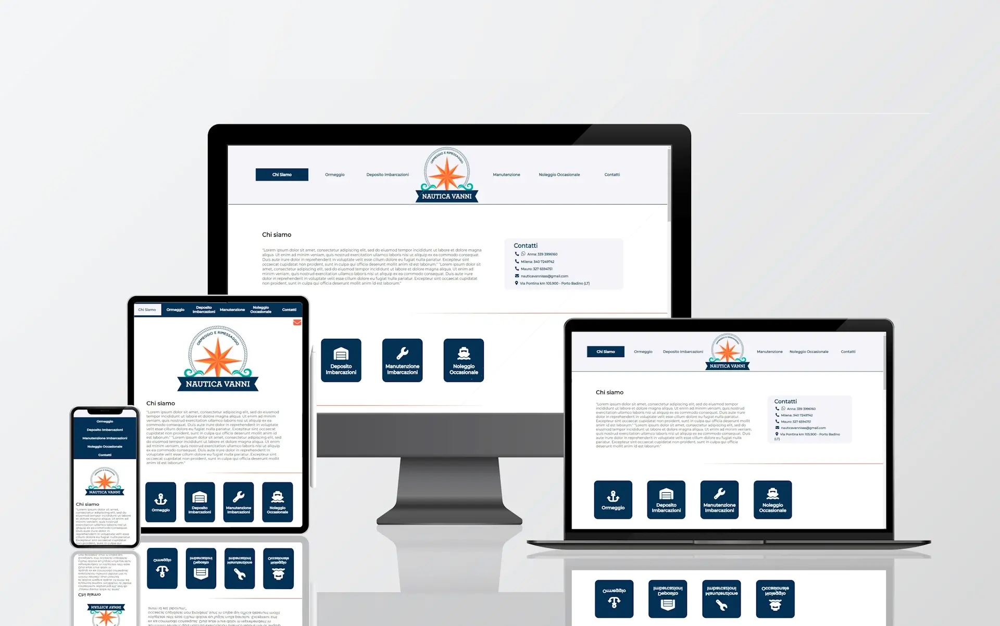
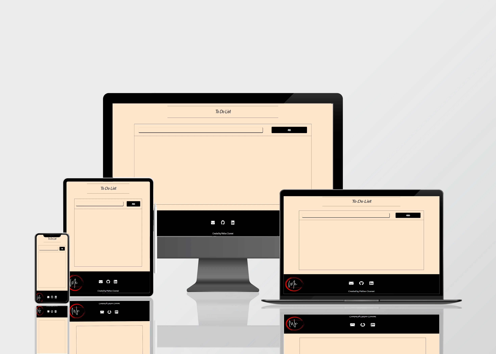

Matteo Cicerani
Web Developer
Chi Sono
Sono uno studente di scienze informatiche alla Sapienza. Tra le mie skills principali ci sono:
- Web Design
- User Experience
- Multiplatform Interfaces
- Inclusive Design
- Git
Appassionato nella risoluzione di problemi e sempre alla ricerca di ispirazioni per migliorare. Cerco di mantenere un approccio inclusivo e accessibile con creatività e semplicità. Sono disponibile per collaborazioni.
Portfolio
Nautica Vanni
Sito realizzato per una Nautica che si occupa di Ormeggio e Rimessaggio.
To Do List
To Do List costruita con Vite+React e Sass.